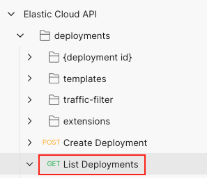

Access the API using a REST applicationedit
You can interact with the full Elasticsearch Service API using a REST client application such as Postman. These steps show how to import the OpenAPI specification into a client and then run API requests. This can be a convenient alternative to using either a terminal session or the Cloud UI to manage your deployments.
Follow these steps to set up your REST application:
- If you don’t already have one, create an API key.
-
Run the following
curlcommand to download the current API specification:curl -o swagger.json -k -X GET https://cloud.elastic.co/api/v1/api-docs/spec.json
- Visit the Postman download page and follow the instructions to install the application version that matches your operating system.
-
Open Postman and click Import. Then, drag and drop your downloaded
swagger.jsonfile into the Upload Files field.
-
Leave all settings at the default values and click Import to add the API specification as a new collection. Since you’re not saving the document as an API, you can ignore the warning about needing to be signed in.

-
Open the
Environmentstab, click Create a new Environment, and rename it toElastic Cloud API. -
Add a variable
hostnameand set it toapi.elastic-cloud.com. -
Click Save to apply the change. Note that in the following graphic, the Initial Value column is hidden for clarity. You need to set only the Current Value.

-
Open the
Collectionstab, hover over the Elastic Cloud API collection, and click View more actions → Edit. -
Under the Variables tab:
-
Set
baseUrltohttps://api.elastic-cloud.com/api/v1. Note that if the variable is set by default it may need to be updated to have a trailing/character deleted. -
Any other variables can be deselected.

-
Set
-
Under the Authorization tab:
- Set Type to API Key.
-
Set Key to
Authorization. -
Set Value to
ApiKeyplus the value of your key, for exampleApiKey V0VtQnEzY0Jpd2l6dk10RW9SeXQ6ajNjSDY2b0FUVldtVHJmTTgxQ2hKQQ==. -
Set Add to to
Header.
- Save your settings.
Now that the Postman application has been configured to work with the Elasticsearch Service API, you can try a test API request:
-
Make sure that the drop-down box for your environment is set to
Elastic Cloud API.
-
Expand the
Elastic Cloud APIcollection, scroll to thedeploymentssection, and click theList DeploymentsGET request. - Click Send.
-
If the request connects successfully, the status pane shows a status of
200 OKalong with the response time and response size. TheBodytab displays the JSON response from the API.
-
You’ll use part of this JSON response for your next API request. Copy the value of
idfrom thedeploymentsinstance.
-
Expand the
Elastic Cloud APIcollection, and underdeployments→{deployment id}click theGet DeploymentGET request. -
Note that the request includes a
deployment_idpath variable.
-
You can try a test run of the Get Deployment request. The request should fail with a
requested resource could not be found errorbecause the requireddeployment_idvariable is not set. -
Under Path Variables:
-
Set
deployment_idto the value foridthat was returned in the previousList DeploymentsGET request.
-
- Click Send.
-
If the request connects successfully, the status pane shows a status of
200 OKand theBodytab displays the JSON response from the API, with details about the deployment configuration and its current state.
You can now use all of the other requests available in the collection that you created from the Elasticsearch Service OpenAPI specification. To learn more about all of the available API endpoints, see the API reference and examples.